Starte FreeCAD und lege mit ein neues Dokument an.
- Oben in der Leiste den Arbeitsbereich Part Design auswählen.
- Das Dokument heißt am besten gleich Chassi.
Kapitel 1
Die Grundplatte für dein Carry – von der Skizze bis zum fertigen Bauteil.
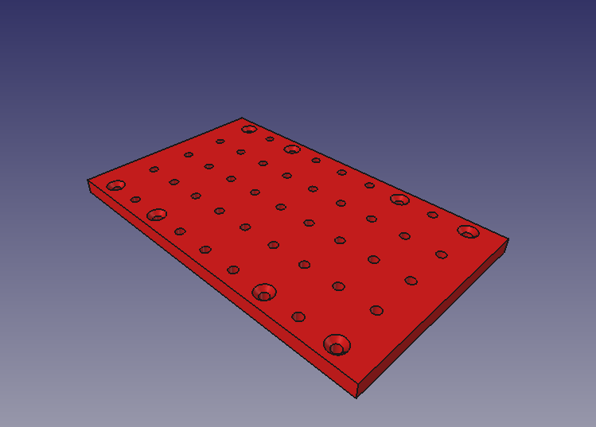
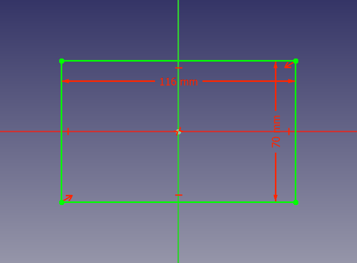
Starte FreeCAD und lege mit ein neues Dokument an.
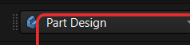
Lege einen neuen Körper an:  Neuer Körper.
Neuer Körper.
Klicke auf  Neue Skizze und wähle die XY-Ebene.
Neue Skizze und wähle die XY-Ebene.
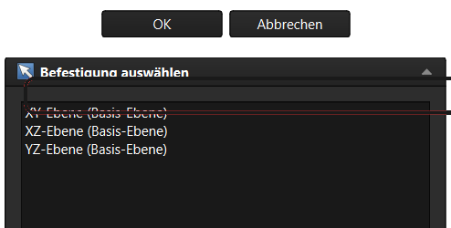
Wähle das
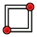
Rechteck-Werkzeug und ziehe ein Rechteck auf.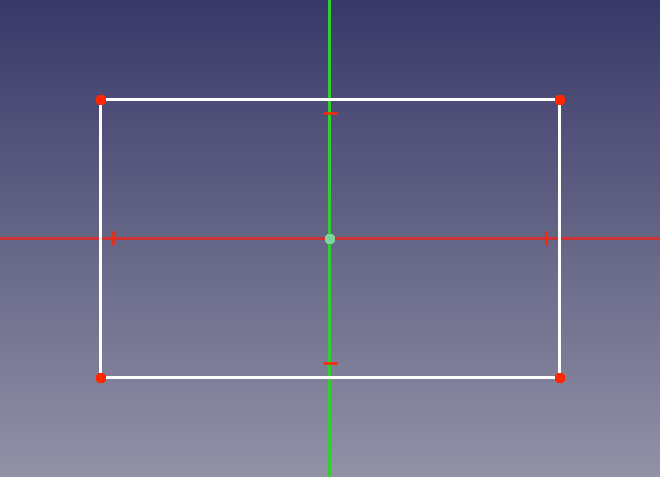
Klicke zwei gegenüberliegende Ecken und danach den Ursprung an. Dann auf Symmetrie.
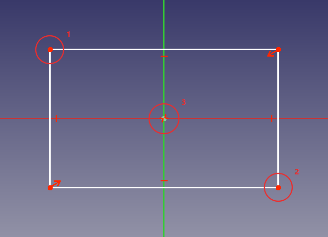
Bemaße die Skizze mit  : 116 mm Breite und 70 mm Höhe.
: 116 mm Breite und 70 mm Höhe.
Kontrolliere vor dem Schließen die Randbedingungen im linken Bereich des Aufgabenfensters.
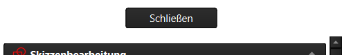
Schließe die Skizze und klicke auf Aufpolsterung.
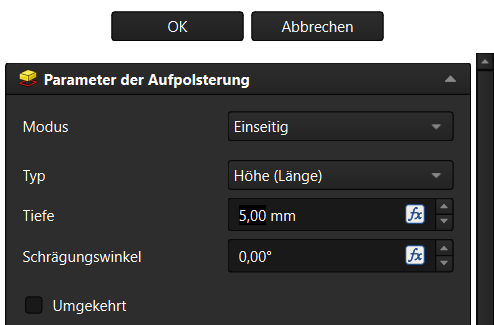
Die Grundplatte ist fertig: 116 × 70 × 5 mm.
Die Platte ist bewusst nur 5 mm dick. So bleiben die Senkungen später flach und die Schraubenköpfe verschwinden sauber.
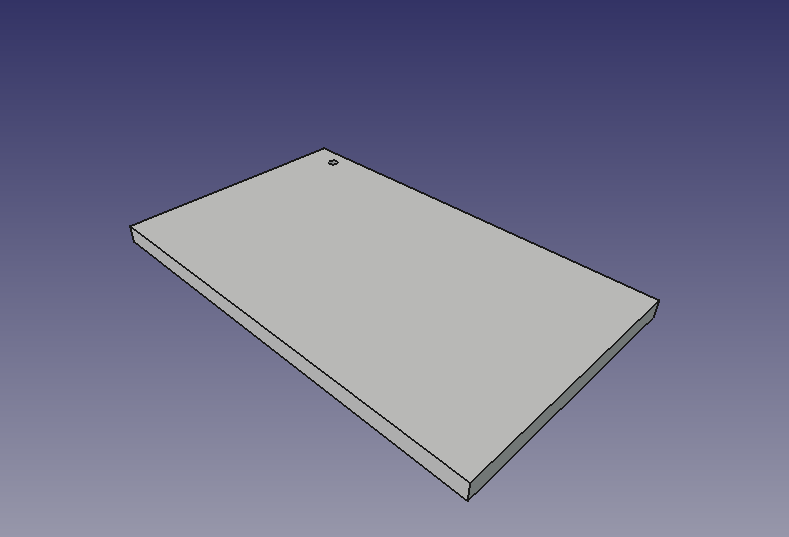
Klicke die Oberseite der Platte an. Sie wird grün markiert.
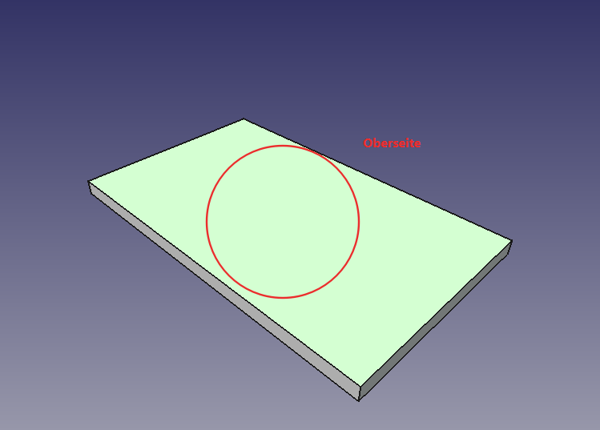
Wähle das Kreis-Werkzeug und setze einen Kreis in die linke obere Ecke.
Die 10 mm und 5 mm werden von der Plattenkante gemessen – dafür brauchst du Externe Geometrie.
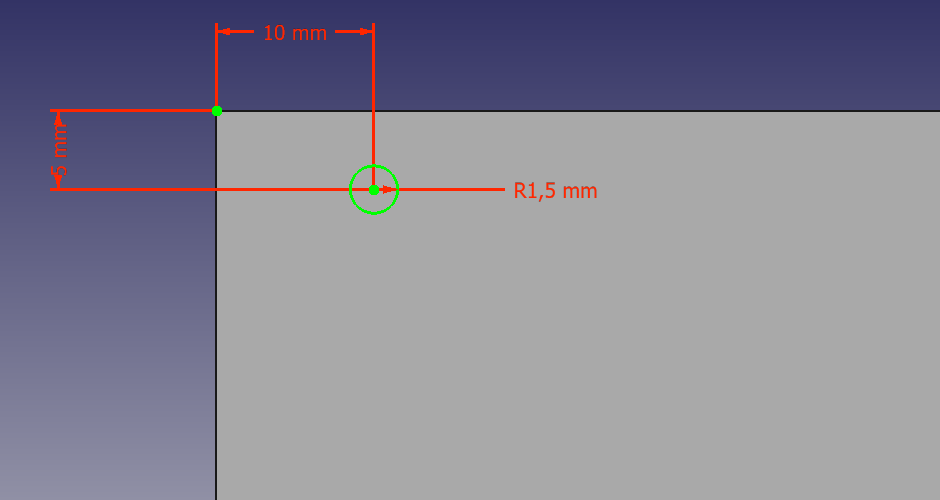
So holst du dir den Eckpunkt: Externe Geometrie.
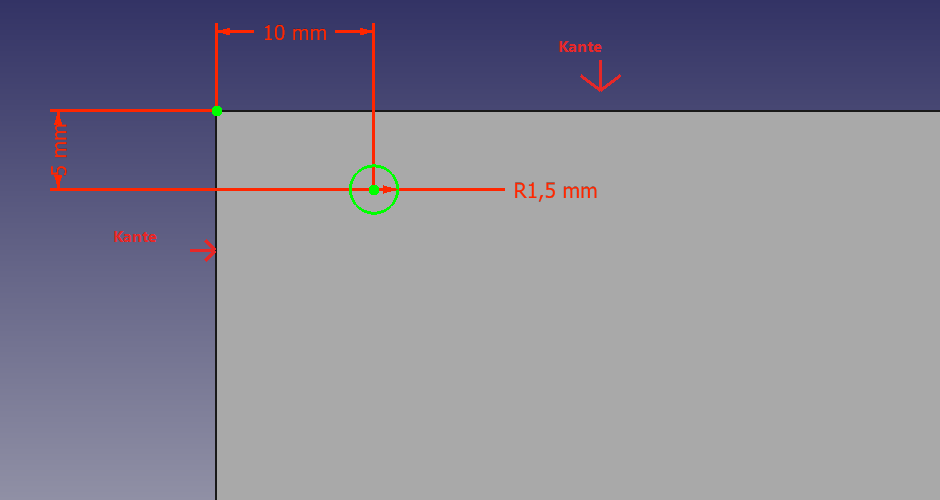
Skizze schließen und Tasche wählen.
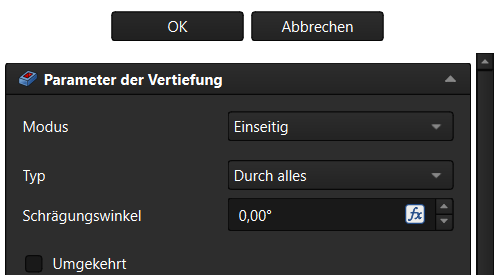
Genau ein Loch ist jetzt sichtbar.
Die Lage des Kreises kannst du auch über Externe Geometrie an die Plattenkante binden.
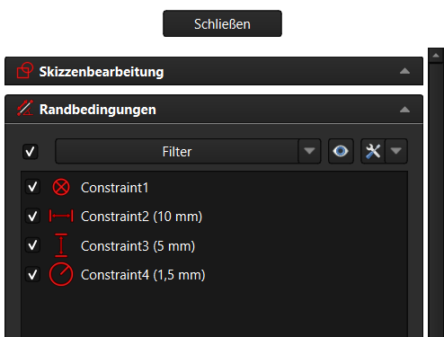
Markiere im Modellbaum die Tasche (das Loch).
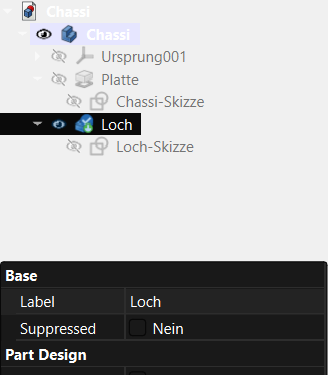
Klicke auf Mehrfach-Transformation.
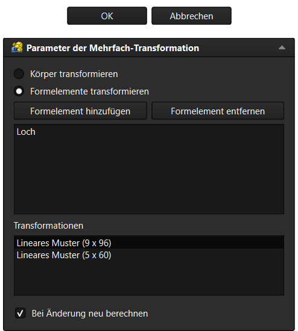
Wähle Formelement hinzufügen und dann Lineares Muster hinzufügen.
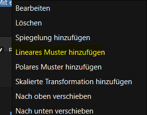
Erstes Muster: Richtung Horizontale Skizzenachse, Länge 96,00 mm, Vorkommen 9.
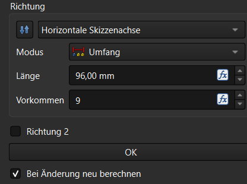
Zweites Muster: Richtung Vertikale Skizzenachse, Länge 60,00 mm, Vorkommen 5.
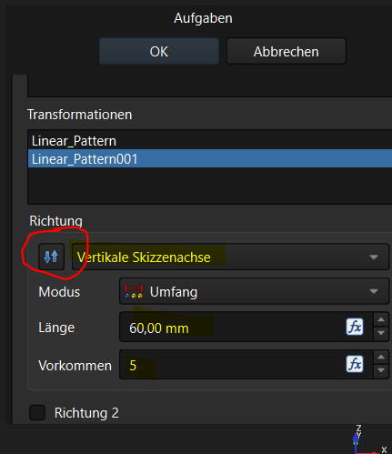
Das Raster ist fertig: 9 × 5 = 45 Löcher.
Falls ein Muster in die falsche Richtung läuft: Die Richtung lässt sich im Dialog umkehren.
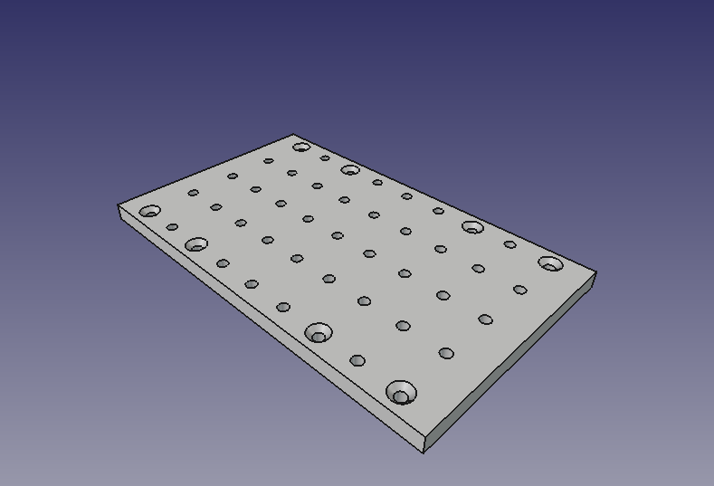
Wechsle in den Drahtgittermodus und wähle nur die 8 Schraubenlöcher aus.
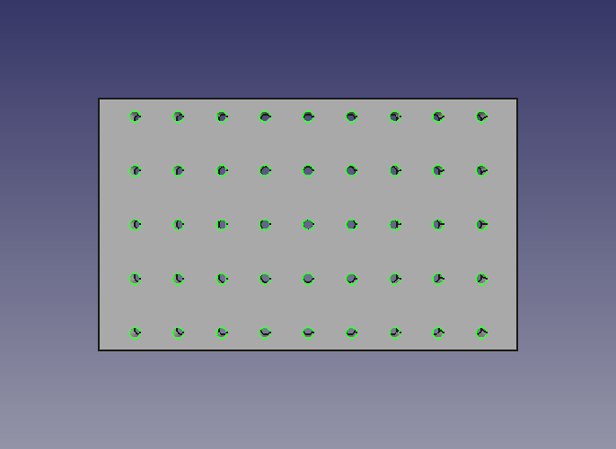
Klicke auf Fase und trage 1,50 mm ein.
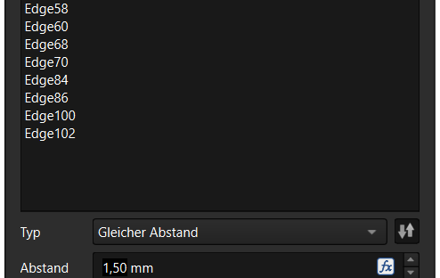
Die 8 Schraubenlöcher sind jetzt angesenkt.
Die 8 Positionen ergeben sich aus den Radhaltern: 2 Schrauben pro Halter, 4 Halter.
Rechtsklick (M2) auf Body in der Baumansicht → Darstellung.
Lege ein Verzeichnis Carry an und speichere dort das Chassi unter Chassi.FCStd.

Speichere am besten nach jedem größeren Schritt mit Strg + S.
Dein Chassi ist rot, hat 45 Löcher (8 davon gesenkt) und ist gespeichert. Jetzt kann es mit dem Rad weitergehen.